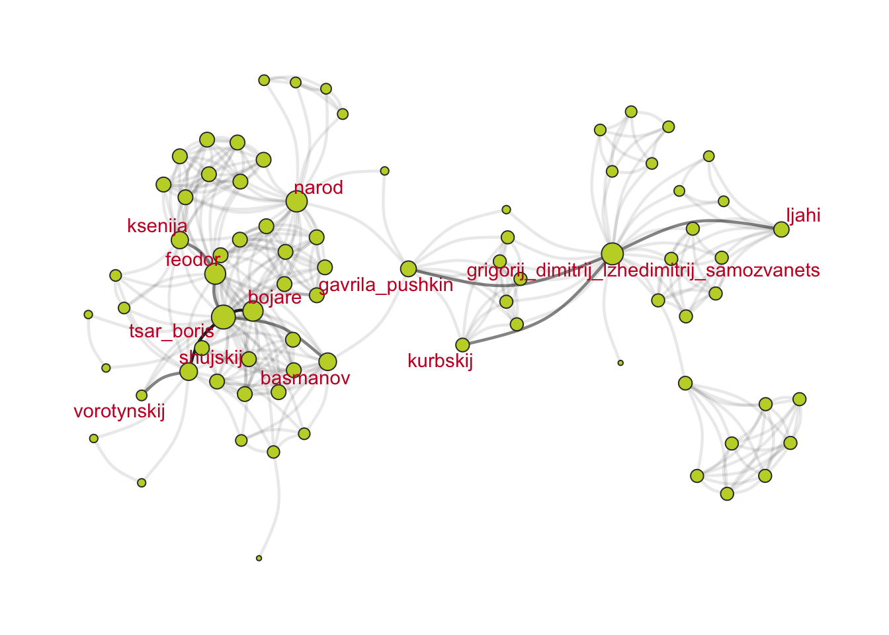
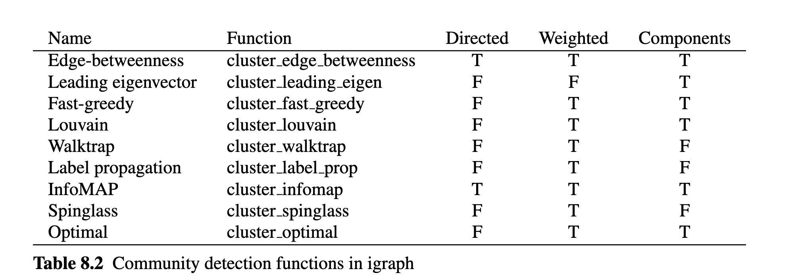

Граф – это математический объект, и в этом уроке речь пойдет о том, как можно его описывать и анализировать. Данные для этого урока происходят из корпуса Dracor.
20.1 О корпусе Dracor
DraCor — сокращение от drama corpora — это собрание размеченных по стандарту TEI драматических текстов. Здесь есть пьесы на французском, немецком, испанском, русском, итальянском, шведском, португальском (только Кальдерон) и английском (только Шекспир), а также совсем небольшие коллекции эльзасских, татарских и башкирских пьес.
Два крупных корпуса пьес в составе собрания — немецкий и русский — были собраны и поддерживаются создателями проекта DraCor. Остальные корпуса были взяты из сторонних проектов, а затем адаптированы для совместимости с функционалом DraCor. Подробнее об этом можно прочитать здесь.
На сайте проекта “Системный Блокъ” можно прочитать серию материалов о том, как возможности Dracor используются в литературоведении:
DraCor hosts 23 corpora comprising 4787 plays.
The last updated corpus was German Drama Corpus (2026-03-01 07:17:33.944).
Извлекаем метаданные.
meta <-get_dracor_meta() |>select(name, title, plays)meta
meta |>plot()
rus <-get_dracor("rus")summary(rus)
212 plays in Russian Drama Corpus
Corpus id: rus, repository: https://github.com/dracor-org/rusdracor
Description: Edited by Frank Fischer and Daniil Skorinkin. Features more than 200 Russian plays from the 1740s to the 1940s. For a corpus description and full credits please see the [README on GitHub](https://github.com/dracor-org/rusdracor).
Written years (range): 1747–1940
Premiere years (range): 1750–1992
Years of the first printing (range): 1747–1986
Тут хранится очень много всего: размер сети, плотность сети и т.д. Вот так, например, выглядят самые длинные пьесы в корпусе:
longest <- rus |>arrange(-wordCountText) |>select(firstAuthorName, title, wordCountText)
А так – самые густонаселенные.
biggest <- rus |>arrange(-size) |>select(firstAuthorName, title, size)
Подробнее см. презентацию Ивана Позднякова, разработчика DraCor Shiny App (https://shiny.dracor.org/).
# не работает на 6.03.2026# godunov <- get_net_cooccur_igraph(play = "pushkin-boris-godunov", # corpus = "rus"# )godunov_metrics <-get_net_cooccur_metrics(play ="pushkin-boris-godunov", corpus ="rus" )godunov_metrics |>str()
List of 15
$ averageDegree : num 8.28
$ density : num 0.106
$ averageClustering : num 0.894
$ corpus : chr "rus"
$ maxDegreeIds : chr "tsar_boris"
$ size : int 79
$ nodes : tibble [79 × 6] (S3: tbl_df/tbl/data.frame)
..$ betweenness : num [1:79] 0 0 0 0 0 ...
..$ degree : int [1:79] 10 10 7 7 10 5 10 10 7 14 ...
..$ id : chr [1:79] "tretij_iz_naroda_2" "chetvertyj_iz_naroda_2" "odin_iz_begletsov" "drugoj_iz_begletsov" ...
..$ closeness : num [1:79] 0.368 0.368 0.308 0.308 0.356 ...
..$ eigenvector : num [1:79] 0.15678 0.15678 0.00124 0.00124 0.13062 ...
..$ weightedDegree: int [1:79] 10 10 7 7 10 5 10 10 7 15 ...
$ diameter : int 6
$ averagePathLength : num 3.03
$ id : chr "rus000042"
$ maxDegree : int 29
$ name : chr "pushkin-boris-godunov"
$ numConnectedComponents: int 1
$ wikipediaLinkCount : int 21
$ numEdges : int 327
godunov_n <- rdracor::get_play_characters(play ="pushkin-boris-godunov", corpus ="rus" )
Помимо уже знакомых нам атрибутов вроде имени (name (v/c)), гендера (gender (v/c)) и степени (degree(v/n)), мы видим здесь много новой информации. Некоторые атрибуты интуитивно понятны: является ли персонаж групповым (isGroup (v/l)); в каком часле явлений он участвует (numOfScenes (v/n)); сколько у него реплик (numOfSpeechActs (v/n)) и слов (numOfWords (v/n)).
Атрибут wikidataId (v/c) представлен лишь для исторических лиц, например, для самого Годунова. По этому id можно искать другие пьесы с тем же историческим лицом.
other_plays <-get_character_plays("Q170172")
Метрики заботливо собраны создателями Dracor’а, но при желании их можно проверить: функция get_text_df() дает возможность извлечь текст пьесы в виде датафрейма.
godunov_df <-get_text_df(play ="pushkin-boris-godunov", corpus ="rus")godunov_df
Убедимся, например, что Григорий появляется в 8 сценах.
Нам осталось разобраться с такими метриками, как weightedDegree (v/n), closeness (v/n), betweenness (v/n), eigenvector (v/n), weight (e/n). Начнем с последнего.
20.4 Анализ узлов и ребер
20.4.1 Вес ребра
Веса ребер, как следует из технической документации к пакету, хранят информацию о том, сколько раз персонажи вместе появляются на сцене.
Эти сведения можно извлечь и из исходной таблицы с ребрами.
godunov_e |>filter(weight >1) |>arrange(-weight)
20.4.2 Взвешенная центральность
Важность (prominence) участника (актора, вершины, узла) определяется его положением внутри сети. Применительно к ненаправленным сетям говорят о центральности (центральный актор вовлечен в наибольшее количество связей, прямых или косвенных), а применительно к направленным – о престиже. Престижный актор характеризуется большим количеством входящих связей.
Мы уже умеем считать центральность по степени (degree centrality), которая определяется количеством связей: чем больше прямых связей, тем более важным является узел.
С понятием веса ребра тесно связана взвешенная центральность по степени (weightedDegree(v/n)). В отличие от простой центральности, она учитывает вес связанных с узлом ребер.
Вот так, например, считается взвешенная центральность для Бориса Годунова:
# ребра, связанные с Годуновымidx <-incident(godunov, "tsar_boris")# суммарный вес реберsum(E(godunov)[idx]$weight)
[1] 35
На графе веса ребер можно отразить за счет толщины и (или) прозрачности линии, а взвешенную центральность - за счет размера узла
library(ggraph)library(paletteer)cols <-paletteer_d("nbapalettes::hawks_statement")V(godunov)$wDegree <- wDegreeset.seed(22092024)ggraph(godunov, layout ="stress") +# здесь кодируем вес реберgeom_edge_arc(aes(alpha = weight),color = cols[3],width =0.8,show.legend =FALSE,curvature =0.2) +# здесь взвешенная центральностьgeom_node_point(aes(size = wDegree),fill = cols[2],color ="grey20",show.legend =FALSE,shape =21) +# обратите внимание на фильтр!geom_node_text(aes(filter = (wDegree >10| name %in%c("kurbskij", "vorotynskij")),label = name),color = cols[1],repel =TRUE) +theme_graph()
Warning: The `curvature` argument of `geom_edge_arc()` is deprecated as of ggraph 2.0.0.
ℹ Please use the `strength` argument instead.

20.4.3 Центральность по близости
Центральность по близости (closeness centrality) говорит о том, насколько близко узел расположен к другим узлам сети. Центральность по близости – это величина, обратная сумме расстояний от узла i до всех остальных узлов сети.
\[\frac{1}{\sum_{i\neq v}d_{vi}}\]
Обратите внимание: в Dracor все метрики рассчитывались с использованием Python-пакета networkX. Имплементации расчетов сетевых метрик могут не совпадать.
В пьесах эта метрика может означать, напрямую ли взаимодействуют с этим персонажем или нет. Например, в пьесе А. Н. Островского «Лес» персонаж Аксюша имеет невысокую взвешенную степень, но наибольшую степень близости. По сюжету, она находится в зависимом положении, в первую очередь от Гурмыжской (которая имеет наибольшую взвешенную степень), и это может означать что остальные персонажи взаимодействуют с ней напрямую, так как могут себе это позволить. – Источник.
На графе закодируем этот атрибут цветом; температурную шкалу установим вручную.
Центральность по посредничеству (betweenness centrality) характеризует, насколько важную роль данный узел играет на пути “между” парами других узлов сети.
V(godunov)$betweenness <- betweenness_centrality# проверьте по таблице
Хороший пример персонажа с высокой степенью посредничества в корпусе русской драмы — второстепенный персонаж Гаврила Пушкин из пьесы «Борис Годунов» А.С. Пушкина. …По сюжету, он является связующим персонажем между приближёнными Бориса и Григорием. При прочтении легко не заметить важность этого персонажа, однако на визуализации сети пьесы хорошо видно, что Гаврила связывает два кластера — персонажей в Москве и в Польше. – Источник.
20.4.5 Центральность по собственному вектору
Степень влиятельности (eigenvector centrality) показывает важность персонажа, учитывая влиятельность персонажей, с которыми взаимодействует данный персонаж. В пьесах эта метрика позволяет разделить действующих лиц на «центральных» и «периферийных».
Персонажи более значимы, если они взаимодействуют с персонажами важнее себя, и теряют свою значимость при контакте с менее важными действующими лицами. – Источник.
Чтобы посчитать eigenvector centrality, необходимо преобразовать граф в матрицу смежности (социоматрицу), в которой единицами отмечено наличие рёбер между персонажами, а нулями – их отсутствие. Вместо единиц в матрице могут быть указаны веса рёбер; в таком случае матрица будет взвешенной.
У таких матриц есть собственные векторы, то есть такие векторы, произведение которых на матрицу эквивалентно произведению числа на этот вектор.
\[\lambda \cdot C_e = A \cdot C_e,\] где
\(А\) — это матрица смежности;
\(λ\) — действительное число;
\(С_e\) — собственный вектор матрицы \(А\).
Элементы вектора \(C_e\) являются степенями влиятельности для каждой вершины. Это можно переписать для отдельных вершин так:
\[C_e(v_i)=\frac{1}{\lambda}\sum_{j=1}^{n}a_{ij} C_e(v_j),\] где
\(С_E(v_i)\) — это степень влиятельности вершины \(v_i\);
\(a_ij\) — элемент матрицы \(A\), расположенный в i-й строке и j-м столбце.
В такой записи видно, что на степень влиятельности вершины \(v_i\) влияют значения всех остальных вершин. Алгоритм расчета eigenvector centrality в последних версиях {igraph} немного отличается.
eigen <-eigen_centrality(godunov)$vectoreigen |>sort() |>tail()
Точка сочленения – это узел, при удалении которого увеличивается число компонент связности. Таким образом, они соединяют разные части сети. При их удалении акторы (узлы, вершины) не могут взаимодействовать друг с другом.
articulation_points(godunov)
+ 7/79 vertices, named, from 1eb6593:
[1] narod
[2] patriarh
[3] grigorij_dimitrij_lzhedimitrij_samozvanets
[4] marina
[5] gavrila_pushkin
[6] tsar_boris
[7] shujskij
Точки сочленения тесто связаны с центральностью по посредничеству.
V(godunov)[betweenness >0.025]
+ 16/79 vertices, named, from 1eb6593:
[1] shujskij
[2] narod
[3] tsar_boris
[4] bojare
[5] grigorij_dimitrij_lzhedimitrij_samozvanets
[6] patriarh
[7] feodor
[8] pater
[9] gavrila_pushkin
[10] poljak
+ ... omitted several vertices
20.7 Клики
Многие сети состоят из относительно плотных подгрупп, которые соединены между собой менее крепкими связями. Один из способов взглянуть на подгруппы сети заключается в исследовании социальной сплочености (cohesion). Сплоченные подгруппы - это множество акторов, которые объединены между собой посредством многочисленных, сильных и прямых связей.
Клика – один из самых простых типов сплоченных подгрупп; это максимально полный подграф, т.е. подмножество узлов со всеми возможными связями между ними. Вопреки своему названию, функция clique_num() возвращает размер наибольшей клики:
clique_num(godunov)
[1] 11
На самом деле таких клик даже три. Узнаем, кто туда входит.
Но клика – это очень строгое определение сплоченной группы. Например, чтобы подграф, состоящий из 11 вершин, считался кликой, нужно, чтобы между ними было проведено \((11 \times 10) / 2 = 21\) связей. Если хотя бы одно ребро отсутствует, то условие не выполняется. Такие клики просто очень редко встречаются.
20.8 K-ядра
Популярным определением социальной сплоченности является k-ядро (k-core). Это максимальный подграф, в котором каждая вершина связана минимум с k другими вершинами этого же подграфа. K-ядра имеют множество преимуществ:
они вложены друг в друга (каждый участник 4-ядра является также участником 3-ядра и т.д.);
они не перекрываются;
их легко определить.
Выражение 6-ядро читают как “ядро степени 6”.
Ядро степени k+1 является подграфом ядра степени k. Любой узел в ядре степени k имеет степень либо k, либо выше. При этом coreness узла определяется по ядру с наибольшей степенью, к которому они принадлежат.
Для определения k-ядерной структуры используется функция graph.coreness():
Для лучшей интерпретации k-ядерной структуры мы можем графически изобразить сеть, используя информацию о множестве k-ядер. Для начала добавим информацию о цвете к атрибутам узлов.
V(godunov)$core <- cores_godunov# убедимся, что добавился новый атрибутnames(vertex_attr(godunov))
При интерпретации важно помнить, что ядра являются вложенными. Чем выше степень ядра, тем больше узлы связаны между собой.
20.9 Модулярность
Модулярность — одна из мер структуры сетей или графов. Мера была разработана для измерения силы разбиения сети на модули (называемые группами, кластерами или сообществами). Сети с высокой модулярностью имеют плотные связи между узлами внутри модулей, но слабые связи между узлами в различных модулях.
Модулярность равна доле рёбер от общего числа рёбер, которые попадают в данные группы, минус ожидаемая доля рёбер, которые попали бы в те же группы, если бы они были распределены случайно.
Если все узлы принадлежат к одному классу, то модулярность равна нулю. Если разбиение на классы хорошее, то модулярность должна быть высокая. Мы можем проверить, хорошо ли группируются персонажи по гендеру. Для этого перекодируем гендер, так как функция modularity() принимает числовую переменную в качестве аргумента. Значение гендера 3 (unknown) в пьесе имеют групповые персонажи.
# надо починить после обновленийV(godunov)$gender ## male = 1idx <-V(godunov)$gender=="MALE"V(godunov)$gender[idx] <-1## female = 2idx <-V(godunov)$gender=="FEMALE"V(godunov)$gender[idx] <-2## unknown = 3idx <-V(godunov)$gender=="UNKNOWN"V(godunov)$gender[idx] <-3
При выделении сообществ в большинстве случаев наша задача – максимизировать модулярность.
Очевидно, что гендер не лучшим образом описывает деление персонажей “Годунова” на группы. Поищем другие сообщества.
20.10 Алгоритмы обнаружения сообществ
В пакете igraph реализовано множество алгоритмов обнаружения сообществ. Обычной практикой является применение нескольких алгоритмов и сравнение результатов.

У нас ненаправленная взвешенная сеть. Применим алгоритм “случайного блуждания”.
В этом задании вам надо провести анализ сетевых данных.
Данные для задания:
ВАРИАНТ 1: «Камер-фурьерский журнал» Ходасевича. Обратите внимание, что данные за каждый месяц разных лет там хранятся отдельно. Ваша задача — обобщить данные хотя бы за один год (но копировать код 12 раз не надо!). Для импорта используйте библиотеку {rgexf}. Для понимания материала можно посмотреть исследование Б.В. Орехова et al. по ссылке.
ВАРИАНТ 2: Персонажи «Войны и мира» Л. Н. Толстого. Здесь у вас на входе — размеченный xml, из которого вам надо самостоятельно собрать данные для сети. Подумайте, как можно операционализировать взаимодействие персонажей и посчитать веса для ребер. Минимум для анализа — один том (лучше больше, некоторыми связями можете на свое усмотрение пренебречь).
ВАРИАНТ 3: Любые другие данные, которые вы собрали и осмыслили самостоятельно в рамках индивидуальной исследовательской работы. Готовые датасеты с «Людьми в черном» на этом этапе нам не подойдут. В этом случае весь сбор данных должен быть подробно описан.
Критерии:
Импорт / сбор данных: корректный импорт, парсинг или сбор данных; используются циклы, фильтрация или агрегирование. Код или описание достаточны для воспроизведения.
Создан объект графа (iGraph или др.) и кратко описан (тип, размер, число компонент, плотность или др.)
Осмысленные атрибуты рёбер (например, вес, тип связи).
Атрибуты узлов включают хотя бы один показатель важности (степень, центральность и др.)
Подграф – выбран и обоснован метод (ego-граф, k-core, фильтрация и др.), пояснён процесс создания.
Граф и подграф визуализированы, визуализация информативна и хорошо читается.
Анализ сообществ: Использован хотя бы один алгоритм (Louvain, Walktrap и др.), результат визуализирован и описан.
Модулярность – вычислена и интерпретирована.
Анализ ключевых узлов / структур: найдены точки сочленения и клики (описано кратко).
Общее оформление: читаемость кода, описания, грамотность.
⏳Дедлайн: 21 марта 2025, 23:59.
Оценка 0-10.
📎Ссылку на опубликованный результат оставляйте в файле.